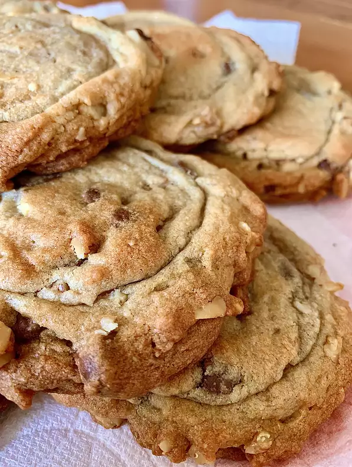

Cookies

Description
Presenting to you the Best Chocolate chip cookies. Who do not like cookies?
Cookies are loved by everyone especially by kids.
These are perfect snack for kids when they return from school, and are easier to make and store at home. So let's see how to make the best cookies.
But before that..
Time to prepare:
- Prep: 20 mins
- Cook: 10 mins
- Additional: 30 mins
- Total: 1 hour
- Servings: 24
Nutrition info
Ingredients:
- 1 cup butter softened
- 1 cup white sugar
- 1 cup packed brown sugar
- 2 eggs
- 2 teaspoons vanilla extract
- 1 teaspoon baking soda
- 2 teaspoons hot water
- 1/2 teaspoon salt
- 3 cups all-purpose flour
- 2 cups semisweet chocolate chips
- 1 cup chopped walnuts
Steps:
- Preheat oven to 350 degrees F (175 degrees C)
- Cream together the butter, white sugar and brown sugar untill smooth.
- Beat in the eggs one at a time, then stir in the vanilla.
- Dissolve baking soda in hot water.Add to batter along with salt.
- Stir in flour, chocolate chips and nuts.
- Drop by large spoonfuls onto ungreased pans.
- Bake for about 10 minutes in preheated oven, or until edges are nicely browned.
Nutritional facts:
- Energy - 298 calories
- Protein - 3.6g
- Carbihydrates - 38.9g
- Fat - 15.6g
- Cholestrol - 35.8mg
- Sodium - 165.8mg